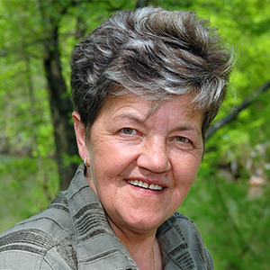
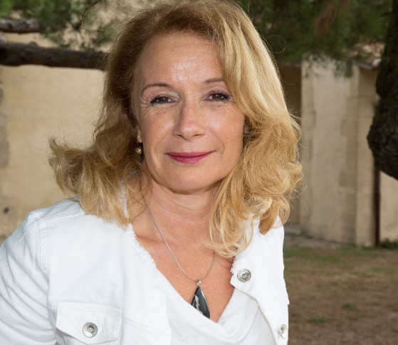
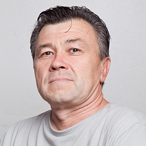
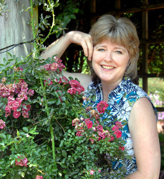
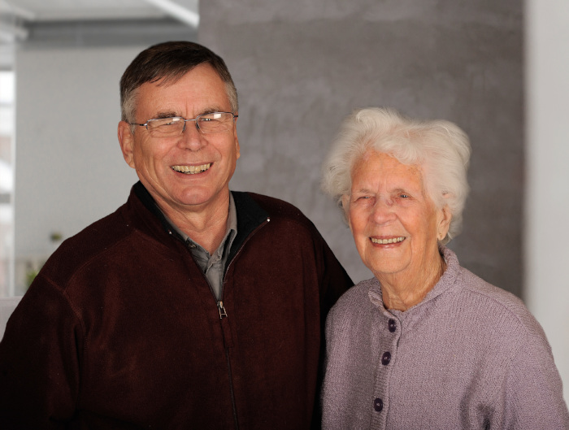
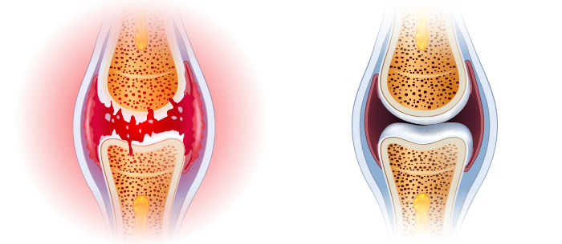

-
Sunt o super bunică!
Din cauza durerii genunchilor și de a spatelui, abia ce mai mergeam. Unguente, injecții și nici tratamentele nu aveau efect. Din contră – sugeau din bine banii și energia. Nu știam ce să fac. Din fericire, am aflat de acest tratament. Dacă este o descoperire nominalizată la Nobel, nu ezit. Și pe bună dreptate! Deja de la prima utilizare m-am simțit mai bine. După aproximativ o lună mă simt ca nouă. Merg la plimbări lungi și îmi fac grădina cu legume cu nepoata mea. Durerea a fost dată uitării. Mulțumesc!
-

Ușor și eficient
Este de necrezut că o astfel de metodă simplă face astfel de minuni. Am beneficiat deja eu, surorile și verișoarele mele. Recomand pentru toată lumea! Acesta chiar este sfârșitul afecțiunilor articulare.
-
Mă simt util
Anii de muncă grea la fabrica mi-au ruinat articulațiile. Promiteam nepoților mei că voi juca fotbal cu ei sau că ii voi lua cu bicicleta, iar apoi din cauza durerii anulasem totul. Copiii, ca și copiii - nu înțelegeau, ci se supărau. M-am simțit ca un obiect inutil. Până în momentul când fiica mea mi-a dat aceste cremă . Asta a fost ceva! Imediat am simțit diferența. A trecut o lună de când folosesc și mă simt indestructibil! Pot alerga și umbla cu bicicleta fără obstacole. Din nou în mod activ petrec timp cu familia mea, așa ca înainte.
-

Am revenit la viață
Articulațiile genunchilor mei au fost distruse de excesul de greutate și munca în picioare – sunt coafeză. Nu puteam rezista durerii, de aceea luam câteva tablete zilnic. După acestea eram adormită și complet lipsită de viață. Din fericire un coleg de la muncă mi-a recomandat aceste cremă incredibile. A fost o lovitură norocoasă. Pentru că durerea a trecut ca luată cu mâna, iar eu mi-am recăpătat din nou pasiunea de coafeză. Am revenit la aptitudine, mulțumită acesteia puteam începe să exersez și... am slăbit 10 kg!
-
Soția a încetat să se mai plângă
Acasă soția va găsi întotdeauna ceva de făcut, robinetul de reparat, dulapul de montat, zugrăvirea pereților. Numai cum să mă aplec și să mă forțez, dacă coloana vertebrală mă durea? La fel, coatele și genunchii. Din fericire, cremăle mi-au redat coloana vertebrală și articulațiile puternice. M-am simțit ca și cum aș arunca povara purtată de ani de zile. În sfârșit, soția mea nu se mai plânge că în mod constant evit treaba din gospodărie!
-

M-am întors la muncă
Imaginați-vă cum este să nu ai o mână eficientă. Este greu nu? Tocmai asta mă supăra, pentru că din cauza degenerărilor, mă dureau degetele, erau mflate și îmi tremurau mâinile. Sunt aurar, asta este munca și pasiunea mea. Trebuia să îmi închid micul meu atelier din ce în ce mai des, iar din cauza aceasta suferea bugetul meu de acasă. Am început să caut metode de reparare pentru articulații și peste tot scriau că cel mai bun este preparatul . Am încercat fără convingere, dar imaginați-vă că după 20 de zile aveam mâinile cu mult mai apte decât acum 10 ani. Pot lucra din nou!
-
O nouă viață pentru un preț atât de mic
De obicei, dacă ceva trebuie să fie eficient, în același timp trebuie să fie costisitor. Și așa a fost cu maserul meu personal, care m-a costa 4 mii pe lună și trebuia să facă minuni. A fost opusul - mi-a făcut nervi, iar articulațiile și coloana vertebrală mă dureau și mai tare. În timp ce ginerele mi-a spus să încerc , i-am arătat să-și bage mințile în cap. Cum mă vor ajuta niște cremă, dacă maserul nu m-a ajutat? A trebui să-mi vedeți fața, când mi-au trecut durerileUn miracol!
-

Singura metodă eficientă
Am încercat diferite moduri pentru a scăpa de „pocniturile” și durerea articulației șoldului. Nimic nu avea efect. Din contră, degenerarea mi-a atacat și coloana. Cu aa fost pe deplin invers. Deja nu mă mai îngrijorez de starea mea, pentru că sunt aptă 100%!
Peste 28 de zile vei uita că te-au durut vreodată articulațiile sau coloana vertebrală – efect confirmat de testele indepeendente
Bună ziua,
Numele meu este prof. Ilie Rusu și sunt om de știință, specialist în biologie moleculară. Pe această pagină vreau să-ți arăt cea mai mare realizare a vieții mele, pentru care chiar acum am primit o nominalizare la Premiul Nobel. Am dezvoltat o metodă prin care oricine poate elimina cu ușurință durerea și reconstrui articulațiile și coloana vertebrală - și, astfel, să-și recapete 100% eficiența fizică în doar 28 de zile.
De aceea, dacă dorești FĂRĂ medicamentele ineficiente și chimice:
- să ameliorezi durerea articulațiilor și coloanei vertebrale – să simți alinarea imediat după utilizarea metodei;
- să reconstruiești și să întărești articulațiile, tendoanele, voloana vertebrală și mușchii cu 87% pentru a funcționa ca noi;
- să îți recuperezi 100% aptitudinea fizică și să nu te mai temi de invaliditate;
- să scapi de rigiditatea și amorțeala articulațiilor și coloanei vertebrale recuperându-ți confortul și buna mișcare;
- să îți protejezi articulațiile și coloana vertebrală de „uzare” și să își păstrezi aptitudinea fizică deplină mulți ani;
- să elimini degenerările, inflamațiile și edemurile – eliminând durerea și să îți recuperezi confortul mișcării;
- să îți regenerezi organismul după rupturi, entorse, leziuni și accidentări;
- și mulțumită acesteia să obții de 3 ori mai multă energie și din nou să te bucuri de viață!
Trebuie să știi că poți obține toate acestea fără operații periculoase, tratamente scumpe, așteptarea la cozile interminabile la specialiști (care și așa neajutorați își încrucișează mâinile...) și fără înghițirea chimicalelor otrăvitoare (nocive pentru ficatul, stomacul și rinichii tăi)... și ca efect să economisești mii de lei. Dacă vrei să faci asta – citește neapărat ce doresc să îți transmit.
Indiferent de câți ani ai și de cât de mult timp te supără durerea articulațiilor sau a coloanei vertebrale. Indiferent dacă îți pocnesc coatele de 2 zile, sau 20 de ani. Chiar dacă doctorul ți-a spus că articulațiile tale sau coloana vertebrală sunt complet distruse, datorită acesteia pierzându-ți speranța pentru o viață normală... Trebuie să știi că peste 28 de zile te vei putea bucura de o aptitudine a mișcării de 100% Fără durere!
Iată de ce metoda mea este o alternativă perfectă pentru medicamentele chimice pentru articulații:
- combate durerea imediat după utilizare, iar după 28 de zile o elimină permanent;
- este sigur pentru organism - formula macromoleculară se prezintă sub formă de crema100% naturale, care funcționează în armonie deplină cu corpul uman, astfel încât nu distruge sistemul digestiv, nu otrăvește corpul și nu cauzează dependență;
- reconstruiește chiar și cele mai distruse articulații și coloana vertebrală în așa mod, încât lucrează ca noi, fără durere;
- este simplă în utilizare și fiecare poate efectua tratamentul acasă individual – în loc să stea la cozile de la specialiști și să ceară ajutor;
- permite să economisești mii de lei, în loc să îi cheltui pe medicamentele chimice și pe terapiile ineficiente.
Am creat metoda naturală, care repară articulațiile și coloana ta vertebrală stricate
Mulțumită acesteia – te eliberezi de durerea și teama de invaliditatea totală... Uiți de toate acele probleme, care te supără din cauza articulațiilor slabe sau ale coloanei vertebrale. Elimini nu doar durerea, dar și rigiditatea, „pocniturile” și edemurile. În sfârșit vei fi în stare să faci tot ceea, ce până la această oră îți făcea imposibil de făcut durerea.
Fără probleme vei urca scărole, te vei apleca, îți vei purta nepoții în brațe. Începi cu plăcere să ai grijă de grădină, să mergi la plimbări, să mergi în excursii pe bicicletă și să dansezi! Și toate acestea mulțumită faptului că am reușit să creez formula inovatoare, care reconstruiește articulațiile și le redă aptitudinea deplină. Cum am făcut asta?
Vroiam să îmi salvez mama de infirmitate
Conform celor mai recente cercetări, în România fiecare a 3-a persoană cu vârste între 36 și 95 de ani, are probleme cu articulațiile sau coloana vertebrală. Aceste persoane dese ori nu își dau seama de acest lucru – crezând că este normal, că uneori corpul doar, amorțește sau „pocnește”. Însă majoritatea sunt amenințați de prejudicii serioase ale cartilajului și sunt amenințate de degenerări!
Din păcate, acest lucru a atins-o și pe mama mea. La început îi era greu doar să urce pe scări sau să se ridice din fotoliu. Mai târziu era din ce în ce mai greu... În grădina pe care o îngrijea și îi oferea atâta bucurie, au crescut peste tot buruieni. A încetat să ne mai cheme la prânzurile în familie. Devenea din ce în ce mai iritată și tristă. Mai târziu, din cauza durerii genunchilor, coloanei vertebrale și a coatelor, nu era capabilă nici măcar să se spele normal.
Asta îi amenința viața!
Însă cel mai rău era faptul că ineficiența a început literalmente să îi amenințe viața. Niciodată nu voi uita acea zi, când am mers după mama cu mașina, pentru a o lua la analize la gastrolog. Mama trebuia să treacă strada pe a doua parte și... aproape că nu a dat mașina peste ea! Din cauza durerii mergea foarte lent și brusc genunchiul i-a amorțit și o durea, încât nu a fost în stare să mai facă un pas. Șoferul s-a oprit în ultima clipă...
M-am enervat când am văzut în geanta mamei o geantă plină de tablete. S-a demonstrat că de mai mult timp le înghițea cu pumnii. Și a devenit clar, din ce cauză avea ulcerații stomacale, probleme cu ficatul și alte afecțiuni gastrice… Femeia dorea ajutor și nu doar că tabletele nu-i ofereau nimic – dar îi distrugeau total organismul.
Cum am descoperit „brevetul pentru articulațiile indistructibile”?
Trebuia să îmi ajut mama să își recupereze articulațiile apte, iar împreună cu acestea aptitudinea deplină și bucuria vieții. Vroiam să fie pentru copii mei și pentru nepoți, o bunică minunată – așa cum a fost mamă pentru mine. M-am gândit atunci „Omule, doar ești cercetător! Ai participat în descoperirea multor substanțe, care eficient combat diferite afecțiuni. De ce să nu creezi mijlocul pentru articulațiile puternice?” Și atunci am început cercetările...
Am efectuat teste de laborator intensive timp de un an. Am testat diferite combinații de substanțe active pe mama mea. Voi nota doar că toate acestea au fost 100% naturale și sigure pentru organism. Am fost inspirat de rețetele din plante de la mănăstiri și le-am combinat cu cele mai recente realizări din biologia moleculară. Cunoștințe științifice, loialitate față de natură și un pic de noroc repede au dat roade - am dezvoltat o formulă macro-moleculară unică.
Am raportat-o imediat la cercetare pe scară largă. Eficacitate ei de 98% au confirmat cele mai mari centre de cercetare din Europa și din SUA! Deja în timpul testelor, formula mea macro-moleculară a restaurat în mod natural articulațiile eficiente și coloana vertebrală la mii de voluntari.
Efecte uimitoare
Mama mea imediat după utilizarea formulei a simțit alinarea în durere. Se bucura că nu o mai supără forajul persistent din genunchi. iar acesta a fost doar începutul. În următoarea săptămână articulațiile și coloana au încetat să mai fie rigide și să pocnească. După care au dispărut edemurile genunchilor și a coatelor, iar orice inflamații ale articulațiilor și coloanei vertebrale, au fost stinse. Mama a început din nou să aibă grijă de grădina ei iubită. Cu toții au fost uimiți, când brusc s-a urcat pe bicicletă și... a plecat strigând de bucurie!
„De ce sunteți atât de înceți?” – întreba nerăbdătoare în perioada ieșirii la restaurant în familie. Iar noi pur și simplu nu ne puteam dezobișnui de la încetinirea pasului în compania ei. După numai 3 săptămâni, mama a recunoscut fericită și zâmbind: „Fiule, eu am articulațiile reparate. Sunt ușoară ca în anii tinereții! Tu ai descoperit antidotul pentru articulațiile dureroase! Câți oameni va ajuta asta! Îți mulțumesc atât de mult”. Și cu adevărat – mama dansa de bucurie cu strănepoții la ziua ei de naștere de 85 de ani. Oaspeții priveau cu uimire, în ce formă este!
Mama și-a recuperat aptitudinea fizică deplină și împreună cu asta energia și bucuria vieții.
Până în prezent, distrugerea articulațiilor și a coloanei vertebrale a fost inevitabilă de-a lungul anilor. Astăzi, cu ajutorul formulei mele macro-moleculare, nu doar că să poate opri, dar și de a inversa complet procesul de uzare a articulațiilor și vertebrelor în scheletul uman.
Permite-mi să îți explic pe scurt, cu funcționează mai exact formula mea super-eficientă pentru articulații puternice. Acest proces este destul de complicat, însă mă voi chinui să îți explic într-un limbaj înțeles pentru persoanele care nu sunt cercetători.
Stinge imediat durerea și reconstruiește articulațiile 24H pe zi
Articulațiile și coloana vertebrală se uzează împreună cu vârsta, dar sunt distruse de asemenea și de excesul de greutate, munca fizică intensivă, ridicarea lucrurilor grele, efectuarea excesivă a sportului, de vătămările și accidentările avute. Fluidul sinovial și cartilajul sunt supuse degradării. Articulațiile sunt ca o balama unsă – încep să se frece între ele și să se degenereze continuu. După ceva timp, începi să simți rigiditate și o durere monstruoasă, care îți fac imposibilă mișcarea. Se dezvoltă inflamațiile și degenerările grele.
Din păcate, celulele cartilajului și lichidul sinovial nu au capacitatea de autoregenerare. Asta înseamnă că (spre deosebire de alte celule ale corpului uman) nu pot reveni la viață. De aceea articulațiile tale și coloana vertebrală se distrug de la o zi la alta. Doar nu vei înceta să mai mergi și să efectuezi activitățile zilnice, pentru a-ți proteja articulațiile și coloana vertebrală. Ar fi absurd.
De aceea provocarea mea a fost să creez formula care va deține o acțiune radicală: Formula unică pătrunde imediat în locurile dureroase și pune capăt impulsurilor electrice dureroase la nivel celular, ca să acționeze în continuare fără durere. Am făcut asta! Am creat formula macro-moleculară puternic regeneratoare. Am denumit-o .
Formula unică pătrunde imediat în locurile dureroase și stinge impulsurile electrice de durere la nivel celular, , ca să funcționezi fără durere. Datorită proprietăților sale termoactive, stimulează circulația celulelor, care accelerează procesele de regenerare cu 300%. În același moment, ingredientele naturale încep automat să reconstruiască cartilajul să normalizeze producția de lichid sinovial.. Este suficient să îl utilizezi cu regularitate pentru ca regenerarea să aibă loc 24 de ore pe zi. Tu vei face ceea ce ai făcut de obicei, iar articulațiile și coloana vertebrală vor reîntineri și vor revin la eficiența deplină. Așa că degenerarea și durerea vor dispărea pentru totdeauna în 28 de zile. Fără efecte secundare!
De ce formula mea macro-moleculară a fost anunțată ca fiind „antidotul minunat pentru afecțiunile articulare”?
OFERĂ PESTE 98% EFICACITATE ÎN REGENERAREA CARTILAJULUI ȘI LICHIDULUI SINOVIAL
ÎNAINTE
Articulație distrusă, atacată de degenerări și durere
DUPĂ
Articulație reconstruită – 100% eficiență fără durere
Până în acest moment părea a fi o minune. Însă este adevărul, confirmat de cazul mamei mele și de 14 mii de persoane care deja și-au regenerat articulațiile și coloana vertebrală, mulțumită metodei mele. Mai mult, eficacitatea formulei macro-moleculare a fost dovedită fără nici o îndoială de centrul de cercetare german din Dormund. Aceasta este o descoperire pe scară mondială, care a obținut recunoașterea și uimirea specialiștilor remarcabili din domeniul reumatologiei, ortopediei și neurologiei. Primesc de asemenea în continuu avalanșe de scrisori de la persoanele, care îmi mulțumesc pentru „vindecare” – acesta este cel mai mare motiv al meu de bucurie și mândrie, pentru această descoperire.
ESTE 100% SIGUR ȘI DEOSEBIT DE SIMPLU DE UTILIZAT
Ingredientele naturale fac minuni - ajunge ca știința să elaboreze compoziția perfectă! Acesta este sloganul care m-a inspirat sa creez formula macromoleculară pentru reconstruirea articulațiilor. Tratamentul conține numai substanțe naturale, sigure și super-eficiente. L-am elaborat sub formă de cremă, astfel încât toată lumea să poată efectua cu ușurință tratamentul la domiciliu.
Toți cunoscuții și familia ta, care s-au obișnuit cu faptul că ai dureri și abia te miști, vor fi uimiți. Când vor vedea că alergi, mergi cu bicicleta și dansezi fără durere, nu vor putea crede că ți-ai reparat articulațiile în 28 de zile!
AMELIORAREA IMEDIATĂ A DURERII
TRATAMENT NATURAL FĂRĂ EFECTE ADVERSE
RECONSTRUCȚIA ARTICULAȚIILOR ȘI COLOANEI VERTEBRALE

UȘURINȚA DE UTILIZARE
APTITUDINEA FIZICĂ DE 100% DUPĂ 28 DE ZILE
ECONOMISIRE A MII DE LEI
Cum ai putea rata această șansă pentru învingerea durerii și recuperarea aptitudinii depline o dată pentru totdeauna?
Poți să suferi în continuare din cauza durerii îngrozitoare a articulațiilor și coloanei vertebrale. Poți de asemenea să îți ruinezi sănătatea cu chimicalele toxice și să trăiești în umbra invalidității progresive dar de ce, dacă îți garantez un mod rapid, simplu și economic pentru recuperarea capacității de a te mișca fără durere? 28 de zile de tratament, este suficient pentru a te alătura celor 14 mii de utilizatori satisfăcuți , care deja au învins durerea, și-au reconstruit articulațiile și coloana vertebrală, iar acum se bucură de o mobilitate deplină!
Nu riști nimic!
Utilizând , vei elimina imediat durerea și vei recăpăta eficiența fizică în 28 de zile. În plus, nu riști nimic! Ca o realizare la nivel mondial, formula mea macromoleculară a primit garanția de prestigiu a satisfacției triple: originalitate, calitate și mulțumire.
Garanția triplă a satisfacției
1. Garanția originalității – în tratamentul macro-molecular s-a lucrat la o formulă pe baza celor mai puternice substanțe pentru reînnoirea articulațiilor și coloanei vertebrale.. Eficacitatea acesteia este confirmată de testele clinice. Aceasta este singura formulă atât de inovatoare. De aceea, ai siguranța că la tine ajunge produsul original, disponibil numai prin intermediul acestei pagini.
2. Garanția calității - datorită procesului avansat de fabricare a formulei macro-moleculare, îndeplinește cele mai înalte standarde de calitate. Având în vedere grija față de sănătatea și bunăstarea ta, concentrația de substanțe active a fost selectată astfel încât tratamentul să fie complet sigur. Toate acestea, pentru ca efectele ei să îndeplinească 100% așteptările tale.
3. Garanția satisfacției – nenumărate teste de laborator și de consum, confirmă cea mai înaltă eficacitate a . Pe baza acestor rezultate, tratamentul a obținut recunoașterea specialiștilor din întreaga lume, care îl recomandă pacienților lor. Aceștia sunt convinși că în 28 de zile vei scăpa de durerea articulațiilor și a coloanei vertebrale, recuperându-ți aptitudinea fizică deplină.
Scapă de durere, reconstruiește-ți articulațiile și recuperează-ți aptitudinea fizică de 100% în 28 de zile – ușor, sigur și economic
Concernele mari din domeniul farmaceutic din SUA și Japonia se luptă literalmente pentru brevetul pentru formula mea macromoleculară. Odată ce voi vinde brevetul, tratamentul va fi accesibil în întreaga lume, dar cu siguranță foarte scump.
Înainte să se ajungă la asta, am decis mai întâi să o distribui în România, pentru participarea în cadrul clubului de reduceri – cu finanțarea de 50% mai ieftin. Totul pentru a ajuta să scape de problemele cu articulațiile și coloana vertebrală o dată pentru totdeauna, un număr cât mai mare de persoane din țara natală.
De aceea, te încurajez să te folosești de această ocazie! Comanda în cadrul clubului de reduceri este simplă. Nu trebuie să trimiți nici un ban pe internet și nici să plătești cu cardul, pentru a obține . Este suficient să completezi formular de comandă în 2 minute și deja după câteva zile, să primești coletul pe care îl plătești ramburs curierului.
Îți mulțumesc pentru timpul acordat citirii mesajului meu. Îți doresc mult noroc în noua ta viață, în care te vei bucura de o mobilitate deplină și... deja peste 28 de zile vei alerga, dansa, vei merge cu bicicleta și vei face ușor tot ceea ce până acum nu puteai face din cauza durerii!
prof. Ilie Rusu
-
Sunt o super bunică!
Din cauza durerii genunchilor și de a spatelui, abia ce mai mergeam. Unguente, injecții și nici tratamentele nu aveau efect. Din contră – sugeau din bine banii și energia. Nu știam ce să fac. Din fericire, am aflat de acest tratament. Dacă este o descoperire nominalizată la Nobel, nu ezit. Și pe bună dreptate! Deja de la prima utilizare m-am simțit mai bine. După aproximativ o lună mă simt ca nouă. Merg la plimbări lungi și îmi fac grădina cu legume cu nepoata mea. Durerea a fost dată uitării. Mulțumesc!
-
Ușor și eficient
Este de necrezut că o astfel de metodă simplă face astfel de minuni. Am beneficiat deja eu, surorile și verișoarele mele. Recomand pentru toată lumea! Acesta chiar este sfârșitul afecțiunilor articulare.
-
Mă simt util
Anii de muncă grea la fabrica mi-au ruinat articulațiile. Promiteam nepoților mei că voi juca fotbal cu ei sau că ii voi lua cu bicicleta, iar apoi din cauza durerii anulasem totul. Copiii, ca și copiii - nu înțelegeau, ci se supărau. M-am simțit ca un obiect inutil. Până în momentul când fiica mea mi-a dat aceste cremă . Asta a fost ceva! Imediat am simțit diferența. A trecut o lună de când folosesc și mă simt indestructibil! Pot alerga și umbla cu bicicleta fără obstacole. Din nou în mod activ petrec timp cu familia mea, așa ca înainte.
-
Am revenit la viață
Articulațiile genunchilor mei au fost distruse de excesul de greutate și munca în picioare – sunt coafeză. Nu puteam rezista durerii, de aceea luam câteva tablete zilnic. După acestea eram adormită și complet lipsită de viață. Din fericire un coleg de la muncă mi-a recomandat aceste cremă incredibile. A fost o lovitură norocoasă. Pentru că durerea a trecut ca luată cu mâna, iar eu mi-am recăpătat din nou pasiunea de coafeză. Am revenit la aptitudine, mulțumită acesteia puteam începe să exersez și... am slăbit 10 kg!
-
Soția a încetat să se mai plângă
Acasă soția va găsi întotdeauna ceva de făcut, robinetul de reparat, dulapul de montat, zugrăvirea pereților. Numai cum să mă aplec și să mă forțez, dacă coloana vertebrală mă durea? La fel, coatele și genunchii. Din fericire, cremăle mi-au redat coloana vertebrală și articulațiile puternice. M-am simțit ca și cum aș arunca povara purtată de ani de zile. În sfârșit, soția mea nu se mai plânge că în mod constant evit treaba din gospodărie!
-
M-am întors la muncă
Imaginați-vă cum este să nu ai o mână eficientă. Este greu nu? Tocmai asta mă supăra, pentru că din cauza degenerărilor, mă dureau degetele, erau mflate și îmi tremurau mâinile. Sunt aurar, asta este munca și pasiunea mea. Trebuia să îmi închid micul meu atelier din ce în ce mai des, iar din cauza aceasta suferea bugetul meu de acasă. Am început să caut metode de reparare pentru articulații și peste tot scriau că cel mai bun este preparatul . Am încercat fără convingere, dar imaginați-vă că după 20 de zile aveam mâinile cu mult mai apte decât acum 10 ani. Pot lucra din nou!
-
O nouă viață pentru un preț atât de mic
De obicei, dacă ceva trebuie să fie eficient, în același timp trebuie să fie costisitor. Și așa a fost cu maserul meu personal, care m-a costa 4 mii pe lună și trebuia să facă minuni. A fost opusul - mi-a făcut nervi, iar articulațiile și coloana vertebrală mă dureau și mai tare. În timp ce ginerele mi-a spus să încerc , i-am arătat să-și bage mințile în cap. Cum mă vor ajuta niște cremă, dacă maserul nu m-a ajutat? A trebui să-mi vedeți fața, când mi-au trecut durerileUn miracol!
-
Singura metodă eficientă
Am încercat diferite moduri pentru a scăpa de „pocniturile” și durerea articulației șoldului. Nimic nu avea efect. Din contră, degenerarea mi-a atacat și coloana. Cu aa fost pe deplin invers. Deja nu mă mai îngrijorez de starea mea, pentru că sunt aptă 100%!
Problemele cu articulațiile și coloana vertebrală mi-au ruinat viața. Acum este de domeniul trecutului! Mulțumită aptitudinea a revenit – ca și cum din nou aș avea 25 de ani.
Această formulă incredibilă mi-a salvat coloana vertebrală! Nu mai am mereu dureri și nu mai sunt distrusă. Nu trebuie să mă mai economisesc mereu. O mare alinare!
Știți ce îmi place cel mai mult? Faptul că nu doar că funcționează, dar este și 100% naturalș. Nu provoacă așadar efecte adverse. Lumea nu cunoaște un mod mai bun pentru articulații puternice.
Aveam articulațiile complet distruse, simțindu-mă ca un bătrân. Numai mi-a redat aptitudinea. Mă mișc fără durere și nu mă mai amenință invaliditatea.
Vecina mea avea dreptate! Această formulă repară articulațiile – elimină rigiditatea și frămițarea. Deja nu mă mai tem că la bătrânețe voi fi senilă. Finalul durerii și al fricii.
Mi-am recuperat articulațiile apte și dorința de a trăi. Din nou pot alerga după nepoți, să merg la piață la cumpărături, să merg la plimbare cu bicicleta! Mi-am recuperat viața normală fără durere.
Nu puteam lucra în grădină, să merg pe bicicletă și nici măcar să mă ridic de pe fotoliu fără durerea înjunghietoare. a soluționat problema. Vă spun pe scurt: am înviat!
ESTE EXCEPȚIONAL. Durerea articulațiilor a încetat să-mi mai otrăvească viața. Am mai multă energie și optimism – am întinerit direct. Mi-a revenit bucuria vieții!